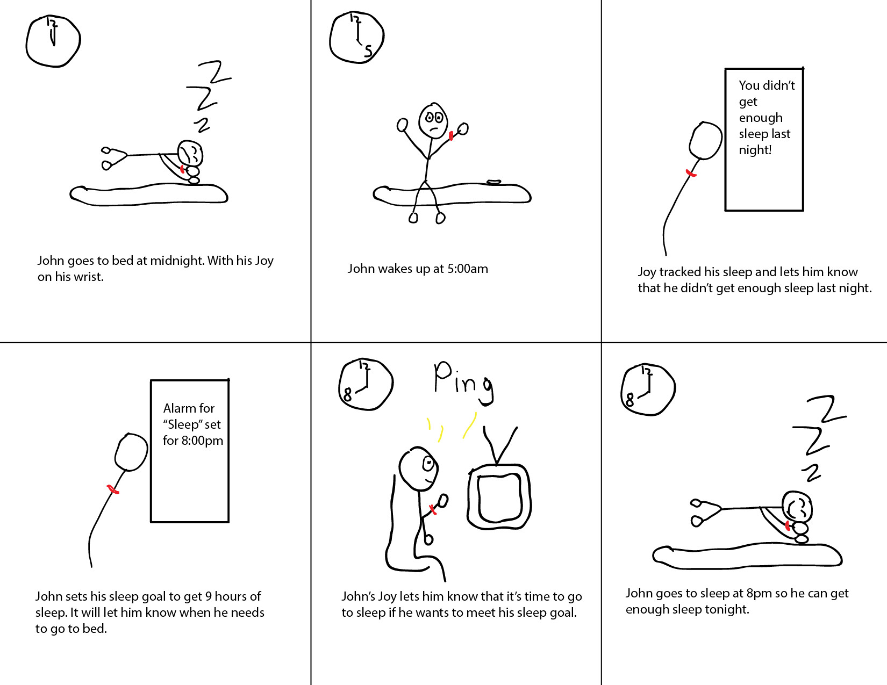

Below is our process.
We wanted to make an app to track mood, but a large part of that was the wearable device. So we brainstormed what form the wearable would take. This is my sketch.

We then sketched personas based off of a small sample of interviews we conducted.

I created those sketches digitally using InDesign.


I then created two storyboards using Adobe Illustrator to identify our key path scenario.
The next step was to create a site map to organize the information we had to display. I created this using Axure.

We created a paper prototype to do some user testing. I conducted two of the user tests and we were able to identify some key changes from user feedback.

Next, I created annotated wireframes from the paper prototype using Balsamiq.

I then put those into a flow diagram using InDesign.

We then moved our final high fidelity prototype.

This was a project done for Introduction to User Centered design. Joy is a concept app designed to help people track their mood and improve it. It uses the Samsung Gear S to measure UV exposure, steps, calories burned, heartrate, and sleep quality. Heartrate is used in conjunction with self-reported mood to calculate stress level. The other metrics are used to help improve mood through physical activity.
Team Members:
Joy Jean and Kenji Goodson.
My Contributions: